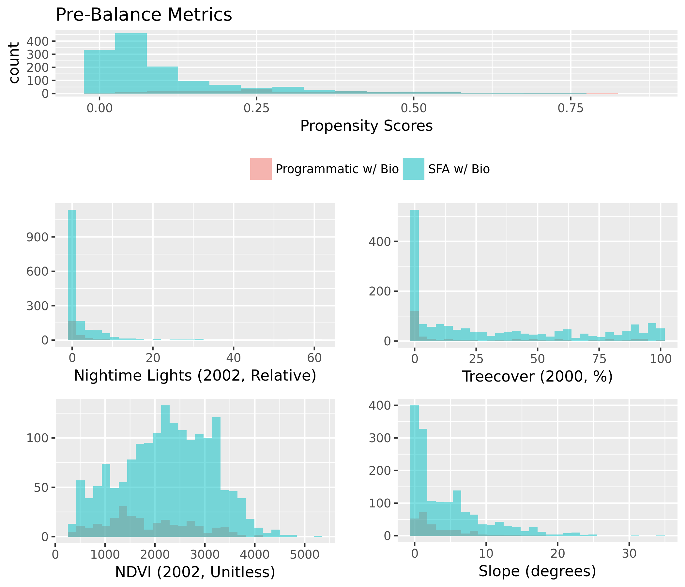
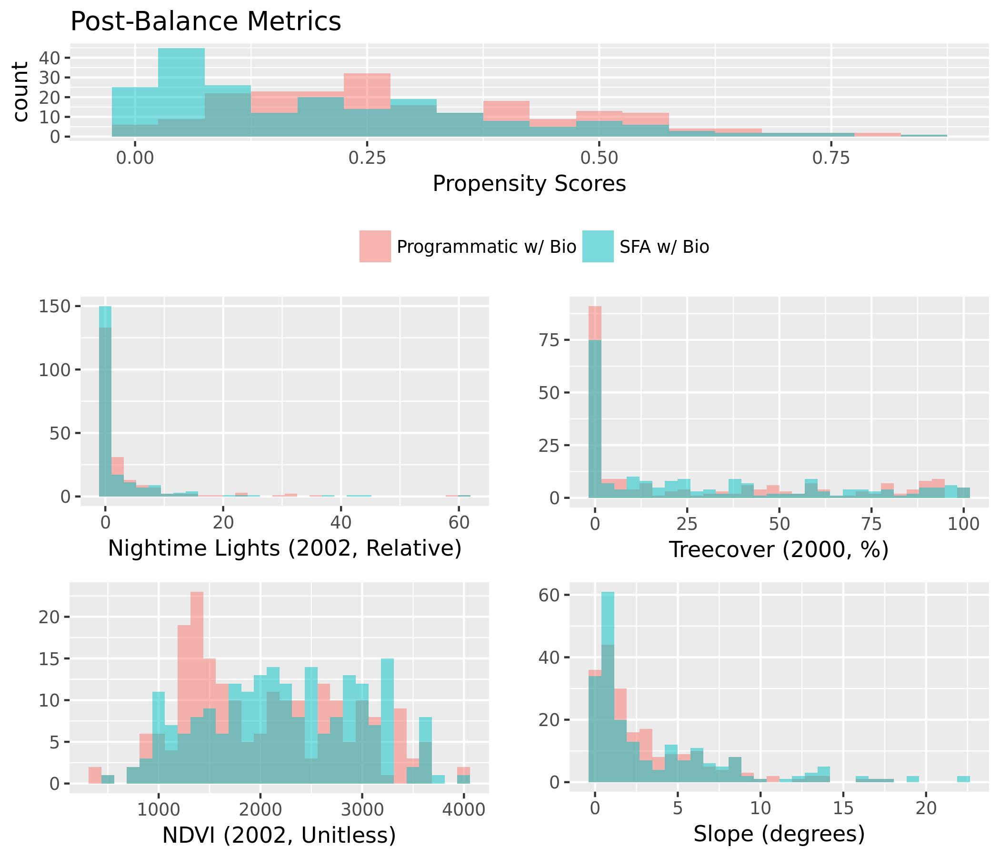

Figure 1. Mean Estimated Impacts from Causal Tree and Random Forest Estimation Strategies.
In this illustration, the blue vertical line is the global estimate of impact from the random forest.
The range of uncertainty is illustrated using a histogram, indicating the proportion of simulations which result in positive or negative estimates.
Specific confidence intervals can be calculated for this global estimate, or for individual project locations. A map of project location uncertainties is presented below.
Propensity Model: Programmatic w/ Bio (Treated), SFA w/ Bio (Control) |
| Dependent variable: |
| |
| treatment |
|
| Dist. to Rivers (m) | 0.0000*** (0.0000, 0.0000) |
| Dist. to Roads (m) | 0.0000 (-0.0000, 0.0000) |
| Elevation (m) | 0.0003 (-0.0001, 0.001) |
| Slope (degrees) | -0.12*** (-0.18, -0.06) |
| Urb. Dist. (rel) | -0.001*** (-0.001, -0.0002) |
| Pop. Density (2000) | -0.0000 (-0.0002, 0.0002) |
| Protected Area % | -0.42*** (-0.71, -0.13) |
| Treecover (2000, %) | 0.01*** (0.004, 0.02) |
| Latitude | 0.02** (0.002, 0.04) |
| Longitude | 0.01*** (0.01, 0.02) |
| Max Precip. (2002, mm) | -0.003** (-0.01, -0.0001) |
| Min Precip (2002, mm) | 0.001 (-0.01, 0.01) |
| Mean Precip (2002, mm) | 0.003 (-0.005, 0.01) |
| Max Temp (2002, C) | 0.47*** (0.28, 0.66) |
| Min Temp (2002, C) | 0.43*** (0.28, 0.58) |
| Mean Temp (2002, C) | -0.83*** (-1.16, -0.49) |
| Nightime Lights (2002, Relative) | -0.002 (-0.03, 0.03) |
| NDVI (2002, Unitless) | -0.001*** (-0.001, -0.0004) |
| Distance to IBA | 0.02 (-0.02, 0.06) |
| GEF Funding | -0.0000* (-0.0000, 0.00) |
| Constant | -1.54 (-3.46, 0.37) |
|
| Observations | 1,579 |
| Akaike Inf. Crit. | 1,009.61 |
|
| Note: | *p<0.1; **p<0.05; ***p<0.01 |


Matched Model: Programmatic w/ Bio (Treated), SFA w/ Bio (Control) |
| Dependent variable: |
| |
| IBA State Score |
|
| treatment | 0.17*** (0.08, 0.26) |
| Dist. to Rivers (m) | 0.04 (-0.12, 0.20) |
| Dist. to Roads (m) | -0.11** (-0.20, -0.02) |
| Elevation (m) | -0.08 (-0.23, 0.07) |
| Slope (degrees) | 0.12* (-0.004, 0.24) |
| Urb. Dist. (rel) | 0.09 (-0.05, 0.24) |
| Pop. Density (2000) | 0.05 (-0.10, 0.20) |
| Protected Area % | -0.09* (-0.18, 0.002) |
| Treecover (2000, %) | 0.09 (-0.06, 0.24) |
| Latitude | -0.22** (-0.41, -0.03) |
| Longitude | -0.04 (-0.18, 0.10) |
| Max Precip. (2002, mm) | 0.005 (-0.24, 0.25) |
| Min Precip (2002, mm) | 0.07 (-0.09, 0.23) |
| Mean Precip (2002, mm) | -0.21 (-0.53, 0.11) |
| Max Temp (2002, C) | 0.81*** (0.29, 1.34) |
| Min Temp (2002, C) | 1.09** (0.07, 2.10) |
| Mean Temp (2002, C) | -1.78** (-3.14, -0.43) |
| Nightime Lights (2002, Relative) | -0.07 (-0.21, 0.07) |
| NDVI (2002, Unitless) | 0.10 (-0.02, 0.22) |
| Distance to IBA | -0.01 (-0.15, 0.13) |
| GEF Funding | 0.004 (-0.10, 0.11) |
| Urb. Dist. (rel) *Treatment | 0.08 (-0.06, 0.23) |
| Dist. to Rivers (m) *Treatment | -0.17** (-0.33, -0.01) |
| GEF Funding *Treatment | 0.07 (-0.03, 0.17) |
| Pop. Density (2000) *Treatment | 0.14* (-0.01, 0.29) |
| Distance to IBA *Treatment | 0.20*** (0.06, 0.35) |
| Latitude *Treatment | 0.01 (-0.14, 0.15) |
| Longitude *Treatment | -0.31*** (-0.45, -0.18) |
| NDVI (2002, Unitless) *Treatment | 0.10* (-0.01, 0.22) |
| Elevation (m) *Treatment | -0.13* (-0.26, 0.01) |
| Treecover (2000, %) *Treatment | -0.05 (-0.20, 0.09) |
| Max Temp (2002, C) *Treatment | -0.18** (-0.31, -0.04) |
| Max Precip. (2002, mm) *Treatment | 0.16 (-0.08, 0.40) |
| Mean Precip (2002, mm) *Treatment | -0.30* (-0.62, 0.01) |
| Min Precip (2002, mm) *Treatment | 0.10 (-0.06, 0.26) |
| Nightime Lights (2002, Relative) *Treatment | -0.02 (-0.17, 0.12) |
| Constant | 0.10** (0.01, 0.19) |
|
| Observations | 420 |
| R2 | 0.30 |
| Adjusted R2 | 0.23 |
|
| Note: | *p<0.1; **p<0.05; ***p<0.01 |